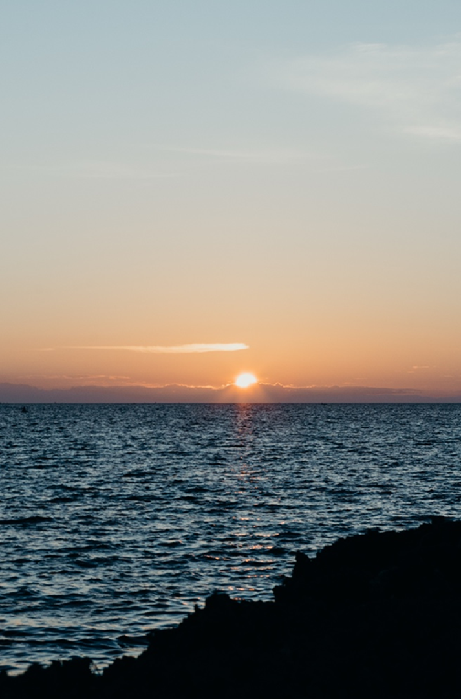

Travel & Stay Guide
Plan your arrival around Hadsan Beach Park, Mactan.
Prepare for early departures, long sessions, launch-site logistics, and practical travel planning.
Launch Point
Base of operations: Hadsan Beach Park.
Where to arrive
Hadsan Beach Park, Lapu-Lapu City, Mactan, Cebu, Philippines.
When to arrive
Arrive earlier than departure time so the crew can brief guests, organize gear, and load provisions.
What to bring
Meals, snacks, drinks, sun protection, non-slip footwear, light layers, medication, and waterproof storage.
Before the Trip
Prepare based on the session you booked.
01
Morning session preparation
For the 5:00 AM departure, staying close to the launch area the night before is recommended.

02
Nocturnal session preparation
Night sessions are longer and more physically demanding. Bring food, drinks, light layers, and comfort items.
03
Post-trip handling
If you keep your catch, bring transport containers or coordinate how fish will be carried after docking.
Catch transport placeholder
Need Help Planning?
Send your travel questions before the charter.
The team can clarify arrival timing, launch-site expectations, and session-specific preparation.